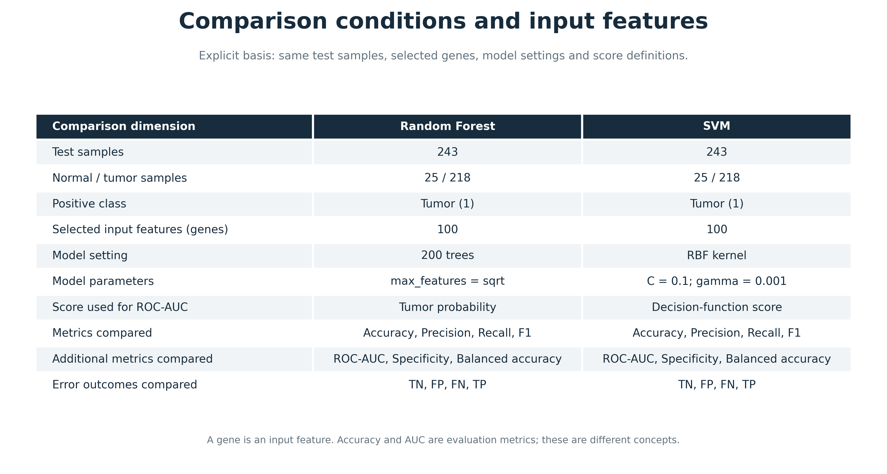
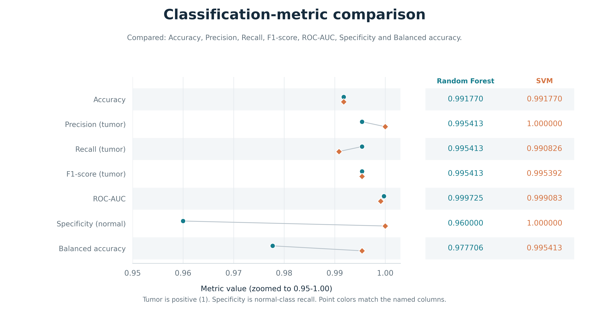
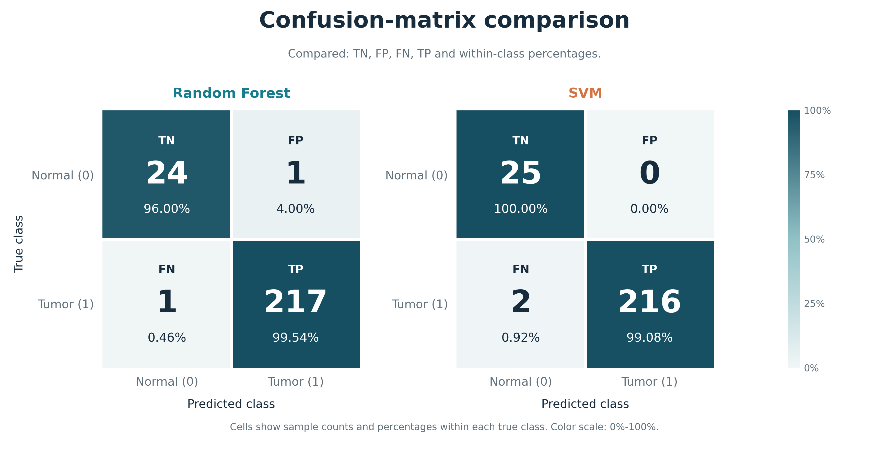
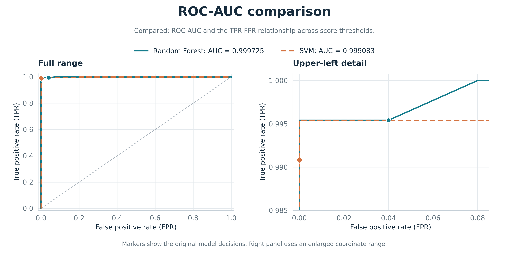
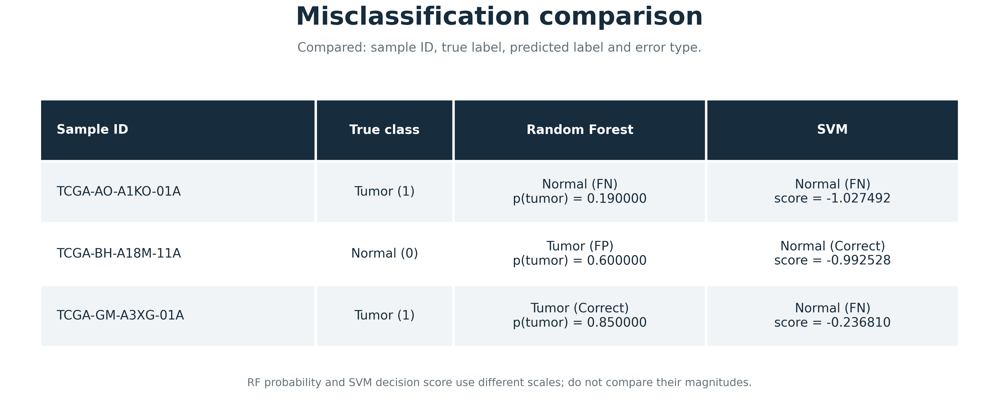

随机森林与 SVM 对比
同一批 243 个测试样本，肿瘤为正类（1），正常组织为负类（0）。单模型结果与对比结果分别展示。
对比依据与输入特征
对比维度：同一测试集、类别分布、输入特征数量、模型设置与分数含义。两模型均使用 100 个筛选基因。

七项评价指标对比
对比维度：Accuracy、Precision、Recall、F1-score、ROC-AUC、Specificity、Balanced accuracy。每行明确写出指标名称。

混淆矩阵计数与比例对比
对比维度：TN、FP、FN、TP 及各真实类别内的比例。行是真实类别，列是预测类别。

ROC-AUC 与分数排序表现对比
对比维度：ROC-AUC，以及不同阈值下 FPR 与 TPR 的关系；不直接比较两种原始分数的大小。

误分类样本对比
对比维度：样本 ID、真实类别、预测类别和错误类型。概率与决策分数仅作为各模型的辅助信息。
